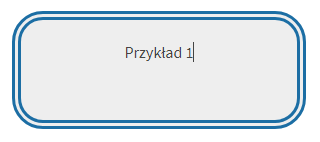
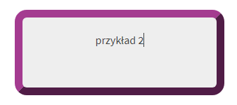

1. Border
Atrybut border pozwala nam na ustawienie ramki dla naszego bloku.Ramkom można nadać różne atrybuty wyglądu, a dokładniej solid, dotted, dashed, double, groove, ridge, inset i outset. Można także nadać im odpowiedni kolor i rozmiar. Ramka będzie zwiększała rozmiar bloku o jej rozmiar, chyba że użyje się atrybutu 2 który jest poniżej. Przykładowe ramki w CSS: 